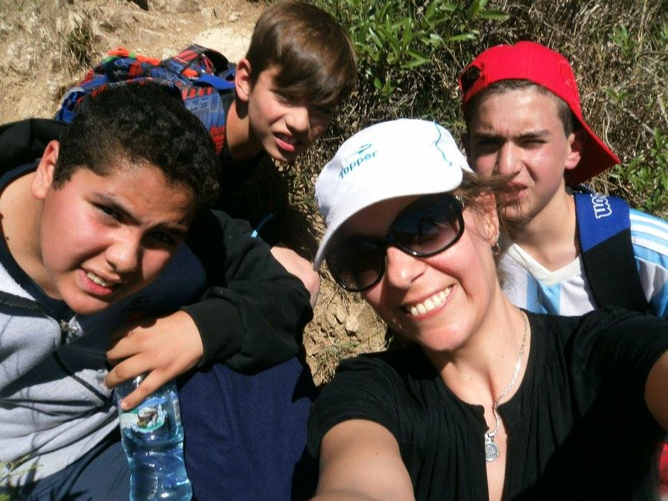

Caminata Saludable 2019.

Campamento 2016 en Santa Rosa de Calamuchita.
Directora y Profesora de Ciencias Sociales. 20 años de antigüedad en el cargo.
El balance que puedo hacer de mi gestión es positivo; pude ver el crecimiento del colegio secundario y ver pasar a chicos que se formaron allí , que hoy algunos están trabajando, otros cursando carreras universitarias
o ya son profesionales.
Como directora pude gestionar abiertamente con un lindo equipo de docentes y acompañamiento de las familias. No dudaría en volver a elegirlo como lugar de trabajo. Creo fielmente que Dios
me puso allí para que pudiera servir a los demás desde mi rol como directora.
Mis expectativas con respecto a los estudiantes es que puedan formarse académicamente en distintos aprendizajes y capacidades para que
sean sus herramientas en un futuro, ya sea para su vida de estudiantes universitarios y/o trabajadores. Además que se sientan felices en el colegio; porque un niño o joven feliz, aprende. Y como expectativa más grande es que
cuando sean adultos puedan recordar el paso por el colegio secundario con una sonrisa.
Anécdotas hay varias; por ejemplo, cuando algunos estudiantes entraban o entran a la sala de docentes y comen lo que los profes
traen para almorzar o comer a media tarde. Otra es cuando estando en la escuela primaria; un par de estudiantes cambiaron el sentido de apertura de las puertas y nos dimos unos cuantos golpes.
Caminata Saludable 2019.
Campamento 2016 en Santa Rosa de Calamuchita.
Primer docente a cargo de las horas de Biología del CBU
Voy a contar dos anécdotas, una de profesores y otra de los alumnos.
Recuerdo el miedo que le tenían Silvana Bruno y Verónica al esqueleto que tenía para dar clases; no querían saber nada en que lo dejara
en la escuela.
Y en cuanto a los chicos, me deben de haber odiado. Yo llegaba al aula y hasta que ellos no se callaran, no se acomodaran la ropa y no se presentaran parados al lado del banco, yo no entraba. El tiempo
que yo pendía mientras charlaban y no dejaban dar clases, yo me quedaba en silencio y les iba contando el tiempo. Eran los minutos de recreo que perdían después cuando tocaba el timbre.
Fue una época muy linda.
Desde Juana Koslay, San Luis, mis saludos para todo el grupo y para los que siguen trabajando, brindándole educación a la comunidad de Olaeta y bueno ¡¡¡Arriba el Santa Rosa de Lima!!! Saludos a toda la comunidad.
Primer docente de Matemática del CBU.
Simplemente quiero recordar el esfuerzo y el trabajo mancomunado entre todos los profes, padres y el apoyo de toda la comunidad. Fue muy lindo trabajar allí.
Además cuando ingresó Clarisa, mi hija
mayor, a primer año, me terminó de caer la ficha de realmente lo importante que era tener el secundario en el pueblo. Y bueno, ella egresó, y el secundario sigue en pie con especialidad y todo, que en un principio, era como un
sueño. Todo lo que se hizo era en pos de esto y de mejorar la escolarización y el nivel cultural del pueblo. Hablar de veinte años no es poca cosa.
Siempre contarán con mi apoyo, porque estoy convencida que es lo
único que nos puede hacer cambiar.
.jpg)
Proyecto comunitario "Recuperando valores". Muestra de fotografías y objetos antigüos (2002).
Primer docente de Música del CBU.
Recuerdo el primer día de clases en el Hogar de Día que le dije a los chicos “Lo logramos”. También las divertidas fiestas de carnavales organizadas por el CBU, como se le llamaba al comienzo. Y por sobretodo la unión de todos en ese momento para que hoy nuestro pueblo tenga un secundario.
Profesora de Matemática del Ciclo Orientado. Dos años de antigüedad.
Me acuerdo que cuando era estudiante de la institución estábamos en clase y de repente sentimos un ruido, era un sapo que tenía un compañero, Juan Ramón, en la mochila. Imagínense, todas las chicas terminamos arriba de
las sillas y a los gritos.
Cuando volví al colegio como docente, fue una sensación hermosa, pero a la vez con muchos nervios e incertidumbre, porque tenía que encontrarme con mis profes que ahora son mis compañeros
de trabajo. No lo podía creer. Lo que sí sabía es que estaba ahí por una misión, formar y orientar a los estudiantes para que puedan desenvolverse en la sociedad y que también puedan producir cambios.
.jpg)
Paseo por la Escuela Técnica San Ambrosio (2018).
Visita guiada por la planta de Bio 4 (Río Cuarto - 2018).
Profesora de Lengua.
Comencé a trabajar en el secundario desde su inicio como docente de Plástica en el 2000, hubo un corto tiempo que no trabajé, me reincorporé como docente tutora y hace 6 años que estoy a cargo de las horas de Lengua de
primero y segundo.
Hay muchas cosas que se han hecho, que nunca se borrarán de mis recuerdos, como por ejemplo salir casa por casa a promocionar la institución, vender productos de la huerta, hacer dulces y mermeladas,
llevar elementos de cocina desde casa, y mucho más; siempre buscando lo mejor para el secundario. Además mis hijas pasaron por sus aulas y pude ser su madre y profesora a la vez.
.jpg)
Jornada Deportivo - Cultural (2014).
.jpg)
Festejo del Día del Estudiante 2013.
20 años de trabajo (14 como docente de Lengua del Ciclo Básico y 6 como docente tutora)
Soy muy feliz trabajando en el secundario, lo tengo a dos cuadras de mi casa y disfruto el tener que ir todos los días.
La mayoría de los recuerdos son lindos. Podría nombrar varios. El día en que nos trasladamos
al edificio propio fue uno de los más emotivos, ver las caras de felicidad de todos los alumnos me llenó el alma.
Otra fue cuando se estrenó la película que se filmó "Bailando con la muerte" en la cual participó
muchísima gente del pueblo además de los alumnos y docentes del instituto. Fueron más de trescientas personas a verla. Fue todo un desafío que surgió luego de haber leído un libro con los alumnos de tercer año en el 2008 y
el apoyo incondicional de Gustavo, mi esposo, que me llevó el apunte en filmar todo y editarla. Se comenzó a grabar en abril y recuerdo que Gonzalo Marietti cuando se filmaron las primeras escenas llevaba puesto un buzo polar naranja,
después de seis meses de filmaciones había que hacer una escena contígua y como hacía mucho calor, ya días de primavera, apareció de musculosa, cuando se suponía que debería usar la misma ropa. Fue todo un trastorno hacerles usar
ropa abrigada en plenos días de calor.
Y otra anécdota es que hacía tiempo que con los chicos de primero estábamos esperando que maduraran las naranjas de la huerta para hacer mermelada o jugo. De un momento para
otro desaparecieron. Luego nos enteramos que dos alumnos de sexto año, Pablo y Emilio, se las habían comido. Cuando les pregunté, respondieron que sí y que solo eran 19 naranjas. Lo primero que se me ocurrió decirles fue que a
la noche iban a dormir sentados en el inodoro. Todos se tentaron y yo también, por lo tanto ese fue todo el reto que les di.
Acantonamiento 2015.
.jpg)
Festejo del Día del Estudiante 2018.
Profesora de Artística. 8 años de antigüedad.
El año pasado nos reímos tanto con las obras de teatro, cuando alguno se olvidaba la letra, se miraban como diciendo y ahora ¿cómo sigo?, y ¿quién aparecía ahí? Franco Marietti, que con su chispa, (que no sé de dónde le
salían las cosas), siempre salvaba la situación. Quedaba medio raro, pero bueno salíamos adelante.
Se extrañan los acantonamientos, las caritas felices, las risas cuando hacíamos la parte de actuación por la
noche, el ansia de mostrar lo que tanto habíamos practicado e imprevistos que siempre ocurrían.
Sin ninguna duda volvería a elegir trabajar en el Instituto Santa Rosa de Lima. Puedo decir que desde que comencé
a trabajar en Olaeta siempre llegué a casa con aprendizajes nuevos y la satisfacción del tiempo compartido.
Lo que extraño de las clases no presenciales es el contacto con los estudiantes, la risas, las charlas,
los trabajos al aire libre, el sentirme querida, el profe ¿la ayudo? o ¿le bajo algo del auto?, o profe ¿almorzó? Qué se yo ¡¡¡tantas vivencias!!! El tiempo compartido con los demás profes, las charlas, los mates, las charlas
con Ale, con Verónica, esas cosas extraño.
Acantonamiento 2016. Laura junto a la promo 2019.

Caminata solidaria 2019.
Profesor de Educación Física. 20 años de antigüedad.
Sí, siempre me sentí a gusto trabajando en el instituto. Además es el secundario de mi pueblo donde nací y crecí. No dudaría en volver a elegirlo.
Recuerdos tengo muchos. Cuando se empezó a hablar de crear
un secundario para la localidad, recuerdo dónde fue la primera reunión, como estábamos sentados. Cuando llegamos al Hogar de Día no había sillas, tuvimos que ir a buscarlas al club, formamos un círculo y allí se comenzó a gestar
el ISRL. También tengo presente algunos viajes a Córdoba que me tocó ir para pelear por los sueldos del instituto.
Era gracioso que los alumnos al principio que no me podían decir profesor ni me llamaban por mi
nombre, sino me trataban de gallego porque era mi apodo en el pueblo. Tengo además muchas anécdotas hermosas de los viajes y de los campamentos. Fuimos creciendo todos juntos con la institución.
Campamento 2015. Minutos antes de actuar.
.jpg)
Campamento 2013 en Santa Rosa de Calamuchita.
Docente Tutora. 18 años de antigüedad.
Necesitaban a una maestra tutora y me contactó el médico veterinario Luis Aguilar que era amigo mío.
Los adolescentes tienen como mucha magia, mucha energía y la paso muy bien en las clases con ellos. Conocí
personas maravillosas que marcaron mi vida, el haber conocido y tenido de amiga a Samanta Yoerg, el habérmela cruzado en el camino.
Tengo miles de anécdotas, pero hay una que me marcó. Es del alumno Santiago
Morán que siempre fue muy inquieto y adoraba salir cuando hacíamos clases al aire libre. Un día planifiqué una visita a la huerta del señor Agustín Bañados. Al ratito de estar recorriéndola, Santiago se quería volver a la escuela
y yo le digo -no Santiago, tanto que querías venir y ahora te querés volver. Y bueno, empezó a dar vueltas y vueltas y correr por todo el predio hasta que lo vi saltando un alambrado. Junté todos los chicos y salimos. En medio
de la calle se puso a tomar agua de un charco. Resulta que cuando entramos a la huerta había una planta de ají picante. Él la había mordido, encima hacía calor, era como septiembre, octubre. Fue muy desesperante hasta llegar a
la escuela, se puso todo bordó. Puso la cabeza debajo de una boca de molino, llegó todo mojado a la escuela.
Después se hizo el gracioso. Se había guardado un pedazo de ají en el bolsillo, no sólo eso, sino que
le había tocado la cara a dos compañeros, los que terminaron en las mismas condiciones. También le pasó ají a las lapiceras de dos de las chicas. Terminó con amonestaciones.
.jpg)
Docentes tutoras 2018.

Día Mundial de la Lucha contra el Cáncer de ,Mama 2019.
Docente de Ciencias Naturales. 17 años de antigüedad.
Si volviera el tiempo atrás lo elegiría de nuevo porque es un lugar donde además de dar clases personalizadas ya que siempre son grupos con pocos estudiantes, son todos muy buenos y con muchas ganas de aprender.
Hay muchas anécdotas. Siempre recuerdo una. Hace como 16 años, yo estaba embarazada de mi segundo hijo Lautaro; tenía pensado llamarlo Facundo, pero ese año tenía un alumno llamado así y era tan inquieto que debía llamarle
la atención varias veces y cada vez que decía Facundo, mi bebé saltaba en la panza. Por eso decidí ponerle Lautaro.

Teatro Social "Mi lugar en el mundo" (2018).
.jpg)
Acto de colación 2013.
Docente de Matemática en el Ciclo Básico. 8 años de antigüedad.
Sí, claro con mucho gusto volvería a elegirlo como lugar de trabajo, porque podemos trabajar libremente, considerando lo que como institución se propone, el ambiente de trabajo es muy lindo, muy humano. Ante diferentes
situaciones, siempre hay soluciones, existe la flexibilidad.
Recuerdos lindos muchos, se comparten muchas vivencias tanto entre docentes-estudiantes como entre pares. Siempre recuerdo los acantonamientos que
dejan mensajes y de los cuales también muchas veces participamos como si fuéramos alumnos, lo cual hace que nos soltemos un poco más y nos mostremos tal cual somos y no desde el rol docente.
Recuerdo que fuimos
a Bio4 con un grupo de estudiantes, que la pasamos muy lindo, conocimos las instalaciones, me gustó verlos interesados en ello.
Inauguración del edificio del I.S.R.L.

Acto del 25 de Mayo en la Escuela Primaria (2018).
Profesora de Inglés. 7 años de antigüedad.
Siempre volvería a elegirlo, se trabaja en un clima sumamente tranquilo. La directora me da la confianza y la libertad para trabajar libremente. En cuanto a la relación con nuestros pares, nos aceptamos con nuestras
diferencias, con nuestras ideas diferentes, siempre con el respeto mutuo. Las clases se dan de una manera óptima ya que son grupos reducidos de estudiantes. Podría decir que tiene todos los ingredientes para que sea una escuela
especial y única.
Tengo muchos recuerdos lindos. Desde el primer día que fui, todos fueron muy amables y lo siguen siendo. Recuerdo todas las actividades extras como los festejos del día del Estudiante, los brindis
con los chicos de sexto año, los acantonamientos.
Como anécdota graciosa que me quedó muy grabada fue cuando nos vestimos de odaliscas todas las profes y bailamos. Fue muy gracioso, sobre todo en los ensayos. Buscamos
tutoriales de youtube, pero no cazábamos una. Terminamos inventando una coreo propia. Fue gracioso buscar la ropa, pintarnos. La profe Flavia era el jeque y se dobló el pie, se cayó y rompió un vaso en el momento del baile. No
me lo olvido más. Fue todo muy divertido.

Taller docente (2019).

Taller con los padres de la Promo '19 (2019).
Docente de la Especialidad. 10 años de antigüedad.
Los recuerdos son muchos. Uno de los momentos más lindos es cuando año tras año veo un grupo de chicos que terminan el secundario y uno fue parte de su formación, eso genera una gran satisfacción, sobre todo el día de
la colación cuando reciben sus diplomas.
Anécdotas, un montón, por ejemplo en el primer curso de sexto año que comencé a dar clases estaban Joel, Matías Brizio, Matías Morán y Luciana Heredia. Contaban cuentos y
como profesor trataba de hacerme el serio, pero por dentro me reía. En un momento largué una carcajada y todos terminamos riéndonos.
Festejo del Día del Estudiante 2018. Román, bendito seas entre todas las mujeres.
.jpg)
Acto de colación 2011.
Preceptora. 17 años de antigüedad.
Si pudiera retroceder el tiempo volvería a trabajar en el instituto, porque es un lugar donde me gusta, donde me siento bien, donde paso muchas horas de mi vida con personas que realmente quiero y aprecio.
Tengo
muchos recuerdos lindos, casi todos son con los chicos. He logrado tener muy buena relación con ellos, sobre todo cuando empiezan el primer año y después al último cuando ya son grandes.
Cada chico que veo
en la calle es uno de mis alumnos.
Anécdotas, tengo muchas, generalmente con los chicos, pero bueno… mejor no las cuento, no voy a nombrar a nadie (risas).
.jpg)
Año 2004. Alejandra se incorporaba a la Institución como Preceptora.
.jpg)
Acto de colación 2010.
Docente tutora. 20 años de antugüedad.
Recuerdo cuando fuimos a hablar con el obispo para que nos ayudara a conseguir la adscripción del colegio, cansados de golpear puertas, en Río Cuarto, en Córdoba, iba el padre Petter quien en ese momento era el representante legal, iba la directora, Verónica; iba Eugenia, otros profes y no pasaba nada. Hasta que un día nos recibió Artemio Stafolani en su despacho y le dijimos que nos tenía que ayudar porque realmente estábamos desesperados y no sabíamos más qué hacer. Él nos respondió que no podía, que no tenía como llegar al gobernador, que en ese momento era De la Sota, y nosotros le dijimos que si él estaba todo los días desayunando y comiendo con el gobernador, con el Ministro de Educación, que les hablara sobre el colegio de Olaeta. Ese mismo día se logró la adscripción. Creo que nos arriesgamos como jóvenes que éramos.
.jpg)
Festejo del Día de la Primavera y Día del Estudiante 2010.
.jpg)
Acto de colación 2010.
Profesor de Ciencias Sociales. 11 años de antigüedad.
Disfruto del encuentro con los estudiantes en cada curso, en los pasillos durante los recreos, con los demás profes, la posibilidad de aprender de los estudiantes. En fin, son muchas cosas, que intento vivir con intensidad.
Sin dudas, volvería elegir la institución, ha sido una etapa formativa para mí en lo profesional, en lo afectivo, he aprendido mucho de todos y estoy muy agradecido. Sobre todo, porque en esta escuela
se puede ejercer
la libertad de pensar, poder dar clases y expresarse sin censura ni limitaciones, sobre todo en las disciplinas que profeso, no en todas las instituciones es posible hacerlo, aunque parezca increíble en el XXI, y eso es mérito,
es justo reconocerlo, de la gestión de la directora y de su modo de concebir la educación y el concepto de autoridad.
Uff tengo tantos recuerdos, me es difícil elegir solo uno pero puedo contar que cada año, cuando
se marcha una nueva promoción de chicos ya formados, nuestro producto terminado (aunque nunca estamos terminados) siento una rara mezcla de sensaciones que me arrancan lágrimas. Uno los quiere como hijos propios, y se dedica a
educar hijos ajenos. Cada vez que se van, uno recuerda cuando los tenía en frente en primer año, expectantes y asustados en su ingreso a la secundaria, y los vio crecer, desarrollarse y cuestionar su entorno. Cuando has compartido
tantas horas juntos, con la excusa de aprender algunas cosas que uno presenta como importantes, a menudo descubro que la vida es mucho más, y que los llevaré siempre en mi corazón, sin importar sus notas.
Un día
Vero me contactó por teléfono y me ofreció si quería hacerme cargo de unas pocas horas de clases en una escuela de Olaeta, aunque eran pocas horas, acepté. Quedamos en que yo viajaría en auto al pueblo y al llegar me presentaba
en la escuela secundaria Santa Rosa de Lima. Así lo hice, pero al llegar al pueblo, no encontraba la famosa escuela, solo veía uno, pero decía French y Berutti, y era la primaria, era cuando se compartía edificio. Para colmo en
el pueblo no andaba nadie, era la siesta y parecía un pueblo desierto, hasta que, luego de toparme con un campo de soja, literalmente, decidí bajarme en la escuela primaria. Cuando me acerco, veo desde el auto a una rubia que me
miraba con total desconfianza, con gesto indisimulado “váyase”, poco hospitalarios en este pueblo, pensé, luego supe que sería una docente, compañera y madre de uno de mis mejores estudiantes, la profe Silvana Bruno. Ella entró
a la escuela, y yo bajé del auto, temeroso, con mi maletín que me acompaña hasta hoy. Toqué la puerta amarilla, y como nadie atendía, entré. Los chicos estaban en clases y yo ahí parado, y apareció la rubia de nuevo, me encaró
y me ladró:
- ¿Qué quiere?
- ¿Esta es la escuela secundaria?
- Sí, ¿Y usted quién es?
- Yo vengo de parte de Verónica Marincioni, soy profesor en Historia y…
- Haaaa dijo ella, pase, pase. “Yo pensé que usted vendía merca”.

Campamento 2019 en Alpa Corral.
Campamento 2015. Han pasado cinco años y seguimos sin descifrar el disfraz.
Docente de Tecnología. 3 años de antigüedad.
Tengo varios recuerdos lindos en estos tres años compartidos como las charlas en la sala de profes, los talleres, los festejos del día del estudiante, cuando me tocó dirigir el acto de fin de año, los viajes compartidos
con los estudiantes, entre otros.
Haber sido alumna de la institución y con los años volver como docente me generó muchísima alegría. Siempre quise volver y se me dio la oportunidad.
Pasé años muy
lindos como estudiante y ahora me hicieron parte del mismo desde el día uno que volví. Me enseñaron muchas cosas y eso lo valoro, me siento muy cómoda y a gusto en mi trabajo.
.jpg)
Festejo del Día del Estudiante 2018.
.jpg)
Visita al Bosque Autóctono de la UNRC (2018).
Profesora de Lengua y Literatura.
Olaeta, el Instituto Santa Rosa de Lima, mi lugar en la docencia. En ella aprendí la solidaridad, el compañerismo, la familia esa que Dios tiene preparada para vos cuando dejas tu hogar, es Santa Rosa de Lima. Espíritu
alegre, su brisa es amor.
Fueron mis años más felices y a quienes extraño. Cada viernes había algo por descubrir de mis chicos, de mis queridos colegas y sobre todo una gran noticia que ponía al pueblo anonadado.
Nuestras horas de lectura en la plaza, el café literario, las fiestas del día del estudiante, los actos, las charlas en los recreos, los talleres, las artesanías, la torta frita... Hay tanto que recuerdo y no logré encontrar
eso en otros colegios. Bendecida a Dios y la virgen por permitirme conocerlos. Hoy, soy feliz de haber formado parte de una GRAN COMUNIDAD. LOS ABRAZO EN LA DISTANCIA.
.jpg)
Jornada Deportiva junto a la Escuela Santo Tomás de Río Cuarto (2018).
Junto a la promo 2015.